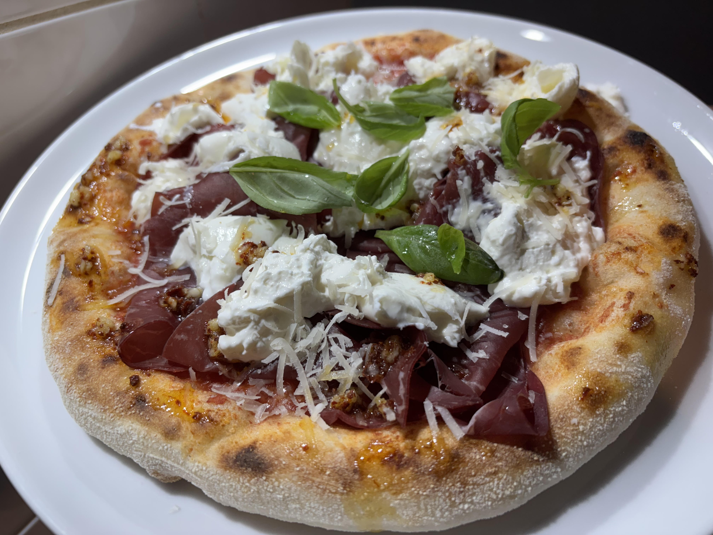

Neapolitan Style Pizza
Home

Description
Soft and crunchy Neapolitan Style Pizza made with 24h rested Poolish, fresh Mozzarella and San Marzano Tomatoes.
The Pizza toppings can be chosen based on personal liking.
Ingredients for the Poolish
- 150 grams of Water
- 150 grams of Pizza flour
- 3 grams of yeast
- 3 grams of honey
Steps for the Poolish (prepare 1 day before)
- Add everything into a bowl and mix together.
- Cover the bowl with foil and poke 3 tiny holes into it.
- Let it rest for 1h at room temperature.
- Let it rest in your fridge for 16-24h.
Ingredients for the Pizza dough
- All of the Poolish
- 325 grams of cold Water
- 550 grams of Pizza flour
- 15 grams of Salt
Steps to prepare the Pizza dough
- Put around 100 grams of the Water to the side.
- Mix the Poolish with the rest of the Water in a dough mixer.
- Add all of the flour and continue letting it mix for around a minute in a slow setting.
- Add all of the Salt and continue mixing.
- Slowly add the cold Water that you put to the side until the dough is ready.
- Take out the Dough from the dough mixer.
- Put Olive Oil on the working table.
- Put the whole dough on the table with the olive oil.
- Stretch the dough, fold it and make a big ball.
- Close it with something and let it rest for 15 minutes.
- After 15 minutes cut the dough into pieces of 230 grams and make balls.
- Let the dough balls rest for 90 minutes while covered.
Meanwhile prepare the toppings
- Cut the Mozzarella into cubes and let them drain from their moisture.
- Take a can of San Marzano Tomatoes, crush the Tomatoes with your hand and add salt.
- Grate some Parmegiano Regianno.
- Prepare all of the other Toppings that you would like to use on your Pizza.
How to make the Pizza
- Let Pizza oven heat up to 400 °C
- Stretch a Pizza dough ball with your hands. (How to strech it by hand)
- Add Tomato sauce and some Parmegiano Regianno on top of the tomato sauce.
- Add Mozzarella and Toppings of choice.
- Cook until ready.
ENJOY!